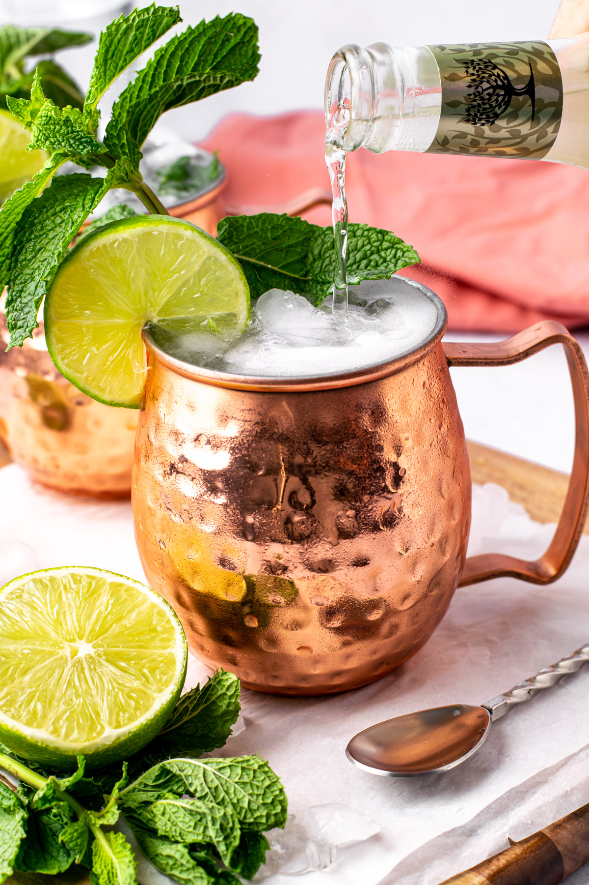

Moscow Mule Recipe

A Moscow Mule is a classic cocktail made with vodka, ginger beer, and fresh lime juice,
served over ice in a signature copper mug. Its bold, spicy, and tangy flavor comes from the ginger beer,
balanced by the citrusy brightness of lime, making it a refreshing yet zesty drink.
Ingredients
- Vodka (2 ounces)
- Ginger beer (4-6 ounces)
- Lime juice (1/2 ounce)
- Ice cubes
Steps
- Use a copper mug (or any glass) for an authentic experience. Fill it halfway with ice cubes.
- Pour in the vodka and freshly squeezed lime juice.
- Fill the rest of the mug with ginger beer. Adjust the amount to your taste.
- Use a spoon to mix the ingredients, ensuring they blend evenly without losing too much carbonation.
- Add a lime wedge on the rim and, optionally, a sprig of fresh mint for a refreshing aroma.